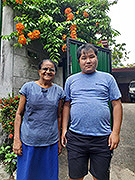
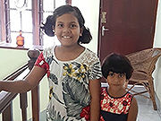
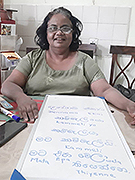

現地の方と交流♪
「私は今回、博士号を取得予定の大学の下見を兼ねて、シンハラ語を修得しようと思い、２回目の参加となりました。
レッスンは、 非常に分かりやすく説明していただき、効率良く勉強できました。
ホストファミリーとの生活はとても楽しく、今回も1ヶ月があっという間なほど素晴らしいホームステイでした。
皆さんとても親切で、シンハラ語もとても分かりやすく教えて頂け、即実践でき、おかげで1ヶ月という短期間である程度形になりました。
スリランカは歴史上の関係から、世界一の親日国と言っても過言ではありません。
戦後に日本を窮地から救ってくれた国であり、その恩返しに日本が多額の援助をしていることをスリランカ人は学校で習っています。
本当に親切な人が多く、自然も美しく食事も美味しいです。

子供はかわいい☆

シンハラ語レッスン！
渡航を決定した直後に政府が財政破綻して大変なこともありましたが、それだけに得られたものは大きいです。
他の国での滞在よりは、今回が一番勉強したと思いますが、一番楽しかったです。
次回はもっと観光をしたいです。
スリランカはやはり世界一好きな国で、移住を考えています。
英語も聞きやすいので、英語を学びたい方にもこのプログラムを是非お薦めします。」